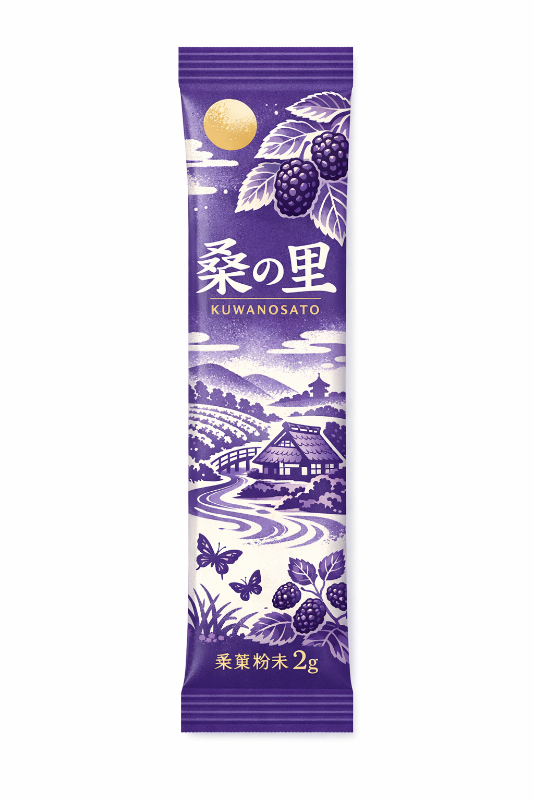

100g Pouch
Kuwa Matcha Pouch
$130
A premium retail pouch for customers seeking a versatile daily-use format. The flagship Kuwanosato format for home and everyday use.
Shop NowFrom Yamanashi, Japan
A caffeine-free green wellness powder that supports healthy glucose metabolism, delivers naturally occurring antioxidants, and opens a new category for premium drinks, supplements, and culinary innovation.
The Next Matcha — Kuwa Matcha · Exclusively by Kuwanosato, Japan
Japanese Source
Mulberry leaves have a deep history in East Asia, but in Japan they carry a particularly rich agricultural and cultural meaning. Kuwanosato is located in Yamanashi Prefecture, and the brand is built around Japanese mulberry heritage, wellness, and long-term social contribution.
In Japan, mulberry cultivation became closely tied to sericulture, the raising of silkworms for silk. That heritage — including the imperial tradition of the Empress personally feeding silkworms with mulberry leaves — gives mulberry a story of care, cultivation, continuity, and refinement. Kuwanosato is shaped by that expertise, original crafting methods, and a philosophy of contributing to Yamanashi, Japan, and the world.


Mulberry is not introduced here as an exotic herb. It is introduced as a meaningful Japanese agricultural ingredient with deep roots in sericulture and wellness tradition.

Kuwanosato is active in cultivation, processing, finished product manufacturing, OEM, and wholesale supply — a vertically integrated source, not a trading company.

Brilliant green powder and direct positioning as "The Next Matcha — Kuwa Matcha." That visual signal tells buyers this is not a dull brown extract.
Wellness Profile
Mulberry leaves contain a range of naturally occurring compounds that have attracted interest in nutrition and wellness research. Kuwanosato's own presentation identifies five major nutrients in mulberry tea: DNJ, GABA, flavonoids, calcium and magnesium, and dietary fiber. The highlights below explain them in modern, credible language — not medical claims.
Mulberry leaf naturally contains DNJ, a compound studied for supporting healthy carbohydrate metabolism and helping moderate how the body processes sugars after meals.
Mulberry leaf naturally contains GABA, a compound associated with calm and balance in the body.
Mulberry leaf contains naturally occurring flavonoids and polyphenols, including rutin, quercetin-family compounds, and chlorogenic acid, which help support the body's antioxidant defenses.
Mulberry leaf also contributes naturally occurring minerals and fiber, making it more than a single-compound ingredient. It is a broad-spectrum plant wellness ingredient.
Culinary Applications
Many of the most successful modern ingredients did not begin in the supplement aisle. They became popular because cafés, dessert shops, and visually creative food businesses turned them into experiences. Korean cafés in Los Angeles have repeatedly played this role by driving demand for new textures, new visuals, and new green beverages. Matcha's rise in America was accelerated by café innovation, layered drinks, desserts, and social media-ready presentation.
Kuwanosato positions its powder as "The Next Matcha — Kuwa Matcha." Because it has a brilliant green color and fine texture, it can perform in the same visual and culinary applications that made matcha successful — with one key difference: it is caffeine-free, and it introduces an entirely new Japanese ingredient story.


Use in lattes, iced beverages, smoothies, or seasonal specialty drinks. Caffeine-free versatility for all-day service.

Layer into soft serve, pastries, baked goods, or plated dessert concepts. Vibrant color and a clean, versatile flavor profile.

Give your menu a distinct Japanese ingredient story beyond conventional matcha — naturally caffeine-free with a unique origin narrative.

Kuwa Matcha blended into rice gives each onigiri a vivid green color and a subtle, earthy flavor — a natural fit for Japanese-inspired cafe menus and bento concepts.

Incorporated into soba dough, Kuwa Matcha creates naturally green noodles with a clean, wholesome character. Served alongside tempura mulberry leaf for a fully ingredient-led dish.

A delicate dusting of Kuwa Matcha transforms confections into premium, Japan-inspired creations — ideal for gifting, omakase dessert courses, or specialty retail formats.
Our Products
One ingredient. Multiple markets. Premium Japanese mulberry can live as a superfood powder, a supplement platform, and a café-grade ingredient at the same time. Produced exclusively in Yamanashi, Japan, naturally caffeine-free.

100g Pouch
$130
A premium retail pouch for customers seeking a versatile daily-use format. The flagship Kuwanosato format for home and everyday use.
Shop Now
100g Tin
$130
A compact, giftable format that supports premium presentation and countertop appeal. Refined packaging for a refined ingredient.
Shop Now
1 Serving · 2g
$2.20
A convenient single-serve format for tasting, discovery, and hospitality use. The ideal introduction to Kuwa Matcha.
Shop Now
60 Capsules · 500mg Each
$50
Whole leaf mulberry capsules for daily wellness. Full-spectrum Japanese mulberry — no extracts, no fillers. Caffeine-free daily supplementation.
Shop Now
120 Capsules · 500mg Each
$100 Best Value
The 120-count option for committed daily wellness routines. Same full-spectrum whole leaf formula — no extracts, no fillers. Twice the supply.
Shop Now
Trust & Provenance
Our mulberry powder is not assembled from multiple unknown sources. It is produced exclusively by Kuwanosato, a Japanese mulberry company active in cultivation, processing, finished products, OEM, and wholesale supply since 2008.
Kuwanosato operates approximately 12 hectares of mulberry cultivation, 80,000 mulberry trees, and produces approximately 30 tons annually — giving this ingredient a concrete, credible scale story. The company was honored by Japan's Ministry of Agriculture, Forestry and Fisheries as one of Japan's Treasures.

Recognition & Credentials
Kuwanosato and its founder SeongMin Han have been recognized for exceptional contribution to Japanese mulberry cultivation and production. The company received the "Discover Countryside Treasure in Japan" award from Japan's Ministry of Agriculture, Forestry and Fisheries — one of the country's highest honors for agricultural excellence.
Partnership
Bring Japanese mulberry innovation to your brand. Kuwausa works with partners across the premium wellness and culinary space:
Get in Touch
Have a question about the product, sourcing, or partnership opportunities? Send us a message and the Kuwanosato team will follow up with the right information.
Thank you for reaching out. Your message has been received and someone from the team will follow up soon.
Something went wrong. Please try again, or email us directly.